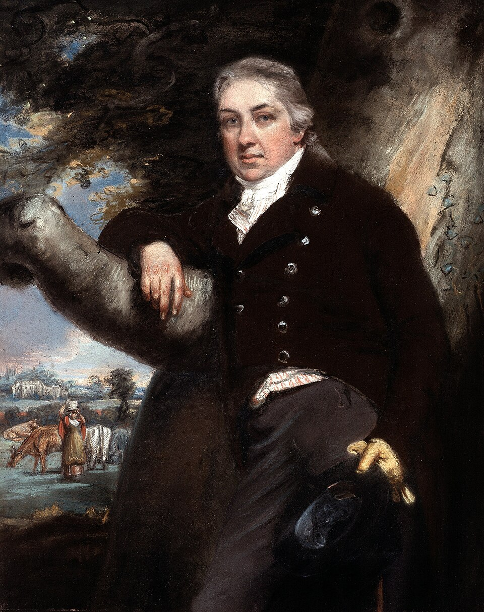

Un médico rural inocula a un niño la viruela de las vacas para desafiar a la de los hombres
El doctor Edward Jenner tomó materia de la mano de una ordeñadora y la introdujo en el brazo de James Phipps, de ocho años, apostando a que el mal leve del establo escuda contra el azote que mata a uno de cada diez. Si las lecheras tienen razón, la muerte pierde hoy a su mejor criada.

En su casa de esta villa, el doctor Edward Jenner practicó hoy dos cortes leves en el brazo de James Phipps, un niño de ocho años, hijo de su jardinero, e introdujo en ellos materia tomada de una pústula en la mano de Sarah Nelmes, moza de establo que se contagió ordeñando una vaca enferma llamada Blossom. No hubo más ceremonia que la calma del médico y la entereza del muchacho, y la mañana siguió su curso de aldea. Lo que se juega en esos dos rasguños, sin embargo, no cabe en la sala: si el doctor acierta, ese brazo de niño acaba de recibir el primer escudo que el hombre opone a la más constante de sus pestes.
Porque conviene recordar lo que es la viruela, aunque nadie en Inglaterra necesite el recordatorio: mata a uno de cada diez que toca, y en los años malos a más; deja ciegos, deja rostros arados de por vida, y no respeta choza ni palacio, que reyes y reinas se ha llevado. Contra ella se practica desde hace décadas la inoculación traída de Constantinopla, que consiste en dar al sano, por un corte, la viruela verdadera en forma leve; el remedio aprovecha a menudo, pero es jugar con fuego: algunos inoculados mueren del favor recibido, y todos, mientras les dura el mal, pueden pegarlo a su casa entera y a su parroquia.
La apuesta del doctor Jenner nace de una sabiduría de establo que los médicos de ciudad desdeñaban: en estos condados de ordeño es fama que las lecheras no se enferman de viruela, y las mozas lo dicen con orgullo, que por eso conservan la cara limpia. Las vacas padecen un mal propio, la viruela vacuna, que pasa a las manos de quien las ordeña como unas pústulas sin mayor consecuencia, y quien lo ha tenido parece quedar guardado del azote humano. Jenner lo oyó siendo aprendiz de cirujano, hace treinta años, y lleva desde entonces juntando casos, uno a uno, de ordeñadores que atravesaron epidemias enteras sin una sola marca.
El doctor no es un iluminado ni un curandero de feria: miembro de la Sociedad Real de Londres, ganó ese título con un estudio paciente sobre las mañas del cuco, y aplica ahora a la peste el mismo método de mirar y anotar. Su plan tiene una segunda parte que hiela la sangre y que él no oculta: dentro de unas semanas, pasado el mal vacuno, inoculará al niño la viruela verdadera, que es la única prueba que la medicina admitirá. Del latín vacca, que es la vaca, llama ya a su materia «viruela vacuna», y si el ensayo prospera habrá que irse acostumbrando a la palabra.
Este diario ha dado cuenta, en sus siglos, de pestes que vaciaron ciudades enteras y de remedios que no remediaron nada, y ha aprendido a ser avaro de esperanzas. Hoy hace una excepción de dos rasguños. Si el pequeño Phipps resiste la prueba, se habrá abierto un camino que no se cierra: el de vencer una enfermedad no huyendo de ella, sino saliéndole al paso con su hermana mansa. Quede para los años venideros juzgar el alcance de lo hecho esta mañana en una aldea de Gloucester; puede que no sea nada, y puede que un médico de campo haya empezado hoy a borrar del mundo una enfermedad.